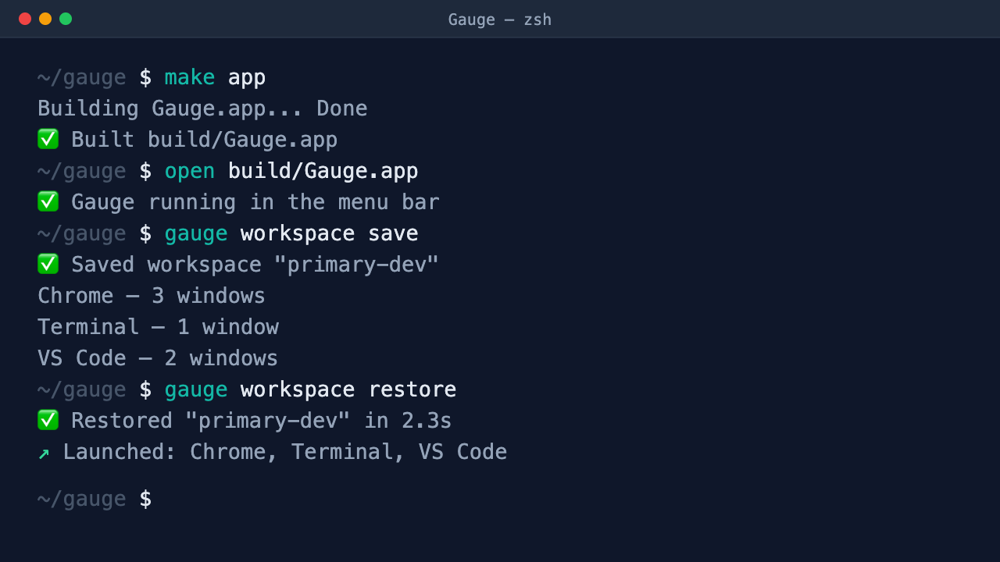

One app to rule your Mac.
Live system stats, network throughput, local ports, running apps, workspace layouts, and clipboard history right in your menu bar — all local-first, with nothing ever leaving your machine.

Why MacOSX
Everything a developer needs, right in the menu bar.
Menu bar live view
CPU and disk usage update continuously in the menu bar icon itself — glance without clicking.
Popover overview
CPU, memory, storage, and swap at a glance, each with progress and thresholds.
Port monitoring
See what is using a local port, copy the address or PID, and kill or force-kill the owning process from a dedicated Ports view.
Network monitoring
Live download and upload speeds, total traffic this session, and per-interface status with Wi-Fi and Ethernet detection.
Clipboard history
Nothing you copy is ever lost. Search, re-copy, pin, or delete past clips — stored locally, syncing nothing anywhere.
Running apps
See every open app with its on-screen windows and bring any of them to the front in one click.
Workspace layouts
Save the apps and window positions you use and restore the whole layout after a boot — missing apps launch automatically.
See it in action
Build, launch, and save or restore your entire workspace from one place.
One app to rule them all.
Download MacOSX, grant Accessibility once, and restore your entire workspace with a single click.